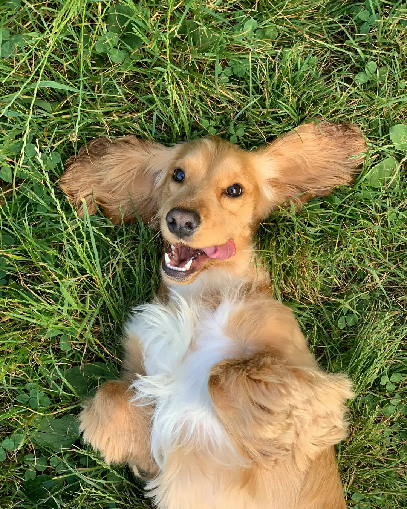
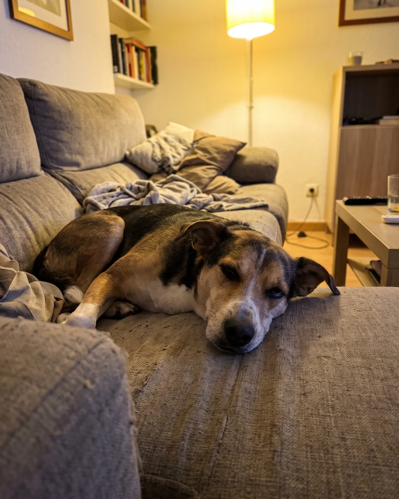
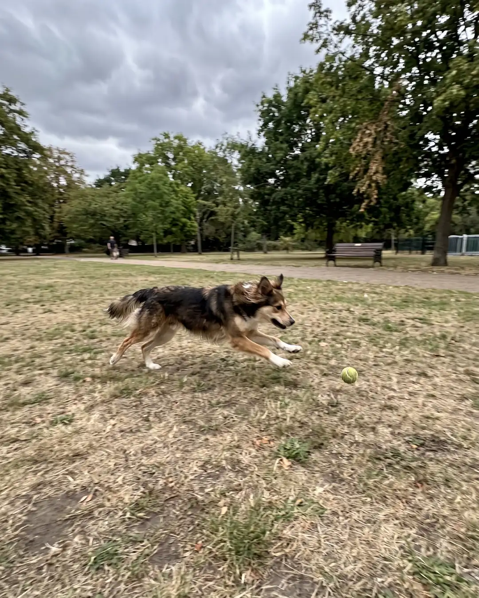
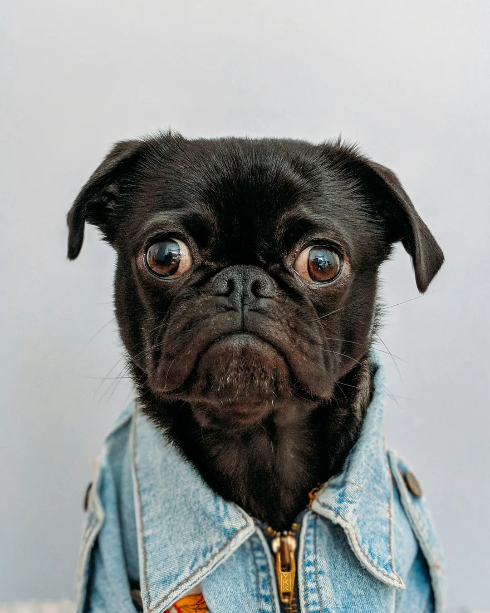

Caso n.º 2 · Perros
Sobre este caso
El caso n.º 2 está cerrado. Fue el caso diario del 2 de noviembre de 2026 y su tema fue Perros. Los detectives de aquel día tuvieron dos retos: cinco imágenes que clasificar en fotografías reales y generadas por IA, y cinco afirmaciones de una frase que clasificar en datos y bulos.
- Imágenes generadas por IA: 2 de 5
- Bulos: 4 de 5
Aquí tienes todas las respuestas. Cada imagen generada por IA trae el prompt que la creó, y cada afirmación, la verdad que hay detrás y los detalles que merece la pena recordar, para que compruebes qué se te escapó.
Uno de los bulos: «Existen cinco razas de perros que físicamente no pueden ladrar.» La verdad: La raza conocida por no ladrar es el basenji, de origen africano.
¿Quieres afinar la vista? Lee nuestra guía para detectar imágenes de IA o nuestra guía para detectar un bulo y luego juega el caso de hoy.
Imágenes
-
Imagen 1

REAL
Fotografía real
-
Imagen 2

IA
La confesión del sospechoso
Un perro mestizo mediano tumbado en el sofá de un salón corriente, mirando a la cámara con cara de sueño; luz de lámpara amarilla.
-
Imagen 3
REAL
Fotografía real
-
Imagen 4

IA
La confesión del sospechoso
Un perro corriendo por un parque con césped seco detrás de una pelota; foto algo movida, cielo nublado.
-
Imagen 5

REAL
Fotografía real
¿Dato o Bulo?
-
Afirmación 1
BULO «Existen cinco razas de perros que físicamente no pueden ladrar.»
La raza conocida por no ladrar es el basenji, de origen africano.
- Por la forma de su laringe casi nunca ladra.
- Emite un sonido parecido a un canto tirolés.
-
Afirmación 2
BULO «Una perra tiene el récord mundial de explotar 100 globos en menos de 20 segundos.»
El récord Guinness más rápido es de un perro llamado Toby, que en 2017 los explotó en 28,22 segundos.
- Antes lo tenía Twinkie, una Jack Russell, con 39,08 segundos.
-
Afirmación 3
BULO «El perro más grande del mundo medía más de 3 metros al ponerse sobre sus patas traseras.»
El récord Guinness del perro más alto lo tiene Zeus, un gran danés de Michigan (EE. UU.).
- Medía 1,11 m hasta la cruz.
- Medía unos 2,23 m de pie sobre las patas traseras.
-
Afirmación 4
BULO «Existen más de 500 razas de perros reconocidas oficialmente.»
La Federación Cinológica Internacional, el mayor organismo canino del mundo, reconoce unas 350 razas.
- El American Kennel Club de EE. UU. reconoce unas 200.
-
Afirmación 5
DATO «Los Beatles incluyeron en un disco un sonido que solo pueden oír los perros.»
Al final del disco Sgt. Pepper's Lonely Hearts Club Band (1967) incluyeron un tono muy agudo, casi inaudible para las personas.
- Lo hicieron como broma para los perros de quienes lo escucharan.